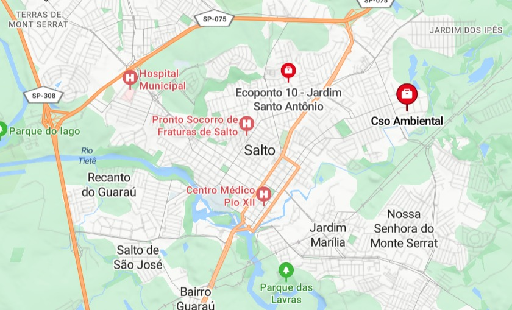

Home
Sobre o Projeto
Atendimento
Seu Perfil
Endereços
Ecoponto 10
Rua Carlos Gomes 492 (Jardim Santo Antonio), Salto, SP
Cso ambiental
Rua Carlos Gomes 492 (Jardim Santo Antonio), Salto, SP
Fazer Descarte
